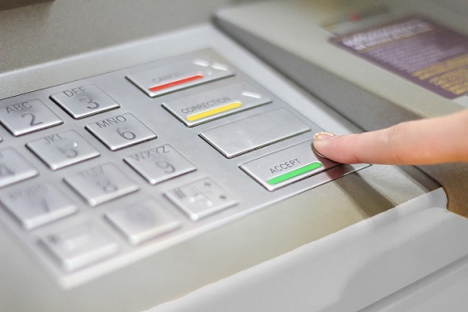

|  |
Generalmente, todos los cajeros automáticos del Ecuador cuentan con varios sistemas y dispositivos de seguridad. Sin embargo, recomendamos utilizar cajeros automáticos ubicados en lugares públicos iluminados, además de no aceptar ayudas de personas desconocidas.